Réplica de la interfaz web y móvil — escritorio y celular
David Carhuaz · Diseño y Desarrollo de Software
theme/ — colores, tema oscuro y tipografías centralizados.responsive/ — puntos de quiebre (escritorio / tablet / móvil).models/ — objetos de datos (planes, pósters, géneros, FAQ).data/ — contenido estático extraído del scraping.widgets/ — cada sección de la página como componente aislado.screens/ — la pantalla principal que arma todas las secciones.Esta separación evita repetir código, facilita el mantenimiento y permite que cada sección se entienda y modifique por separado.
Una barra superior que queda fija al hacer scroll, con el logotipo, los enlaces del catálogo y los botones de cuenta. Debajo, el hero a casi pantalla completa: un mosaico de fondo, el logotipo grande, el precio de entrada y el botón de suscripción. En móvil la barra colapsa a un menú hamburguesa y el hero reduce su altura.
Se empleó un CustomScrollView con un encabezado fijo para la barra.
El mosaico del fondo se recreó con una cuadrícula de bloques con degradado, sobre la
que se aplica una capa oscura para que el texto tenga contraste. El menú móvil usa un
Drawer lateral. La paleta (fondo #120C1D, texto blanco) y la
disposición se tomaron del scraping de la página.
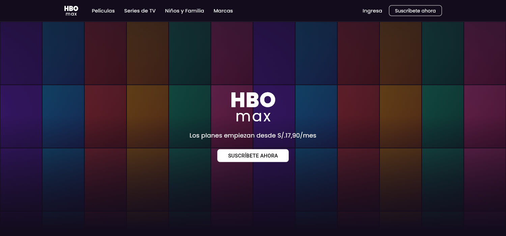
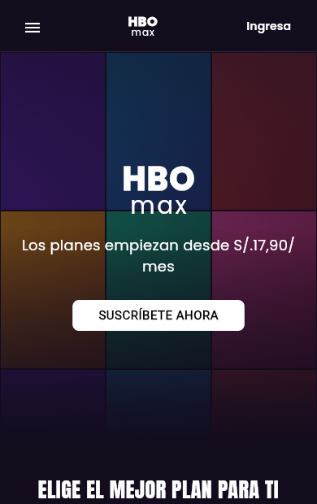
Un título centrado, un selector de facturación (Anual / Mensual) y tres tarjetas de plan (Básico, Estándar, Platino) con su precio, beneficios y botón de selección. En escritorio se muestran en fila e igualan su altura; en móvil se apilan en una columna.
Las tarjetas usan una fila con altura intrínseca para igualarse a la más alta en escritorio, y una columna en móvil. El selector funciona con estado local. Los precios y beneficios se obtuvieron del scraping. El título usa la tipografía Anton para dar el aspecto de cartel característico.
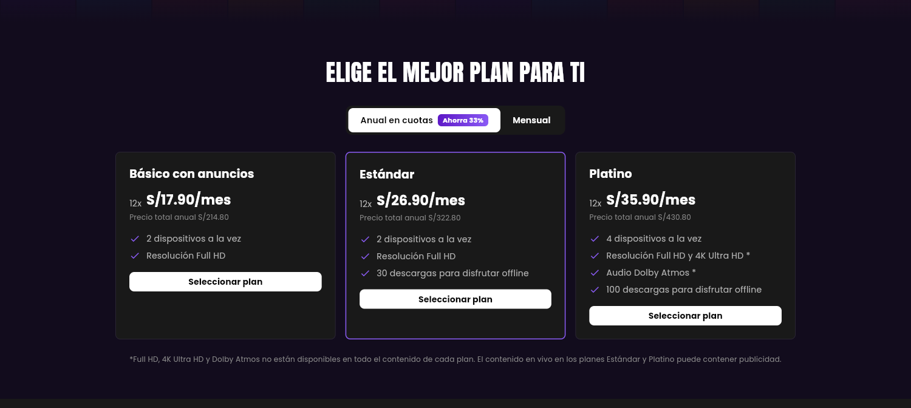
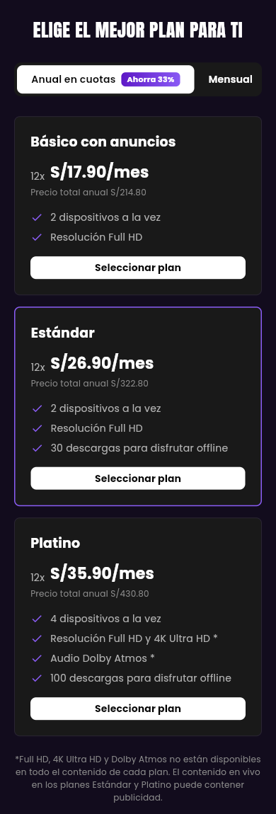
Una etiqueta de sección, un banner destacado horizontal con imagen de fondo y, debajo, un carrusel de "héroes". Es la sección donde se integran las imágenes propias y donde mejor se aprecian las tres tipografías trabajando juntas.
Las imágenes propias se muestran en formato horizontal recortadas para llenar su espacio. Sobre la imagen del banner se aplican degradados para que el texto sea legible. Las tres tipografías aparecen con un rol claro: Anton en el título, Bebas Neue en las etiquetas y Poppins en la descripción y el botón. El carrusel es una lista horizontal desplazable.
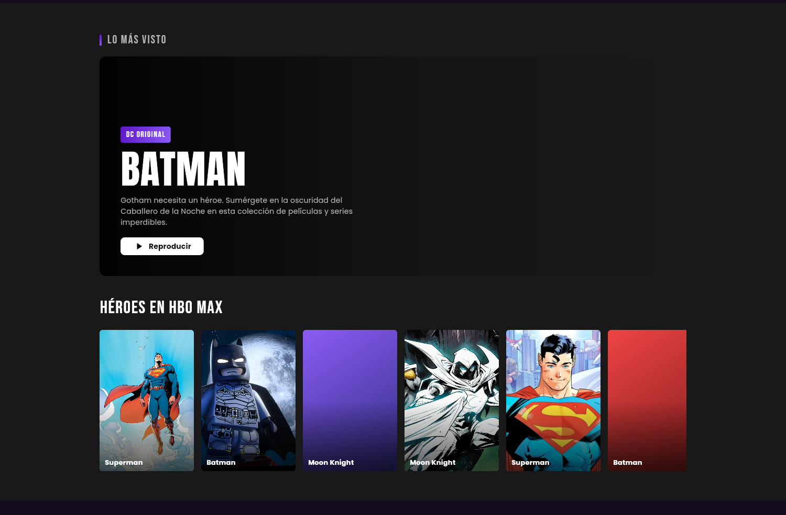
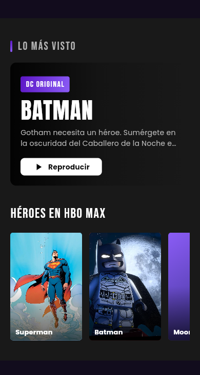
Un texto de cierre y una cuadrícula de ocho tiles de género tipo cartel, cada uno con su categoría arriba y el título del contenido abajo. Cuatro columnas en escritorio y dos en móvil.
Se usó una cuadrícula cuyo número de columnas cambia según el ancho de la pantalla. Cada tile lleva un degradado de color y su categoría se rotula con la tipografía Bebas Neue. Las categorías y títulos provienen del scraping de la página.
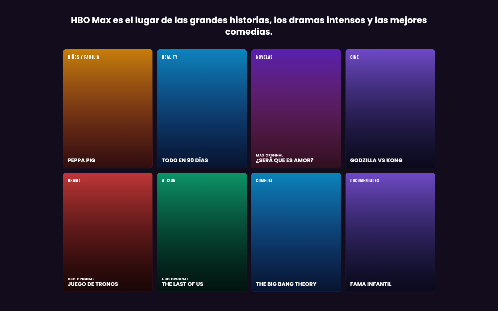
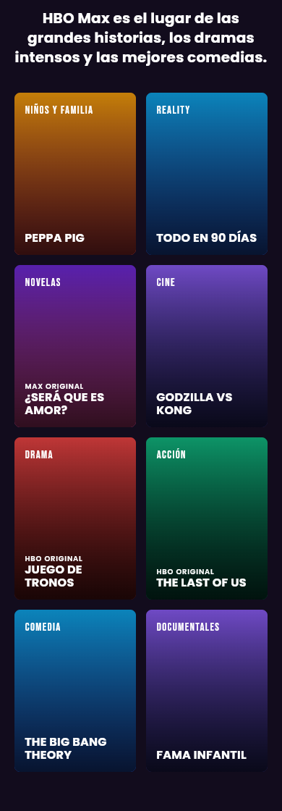
Un título centrado, una cuadrícula 3×2 de tarjetas horizontales (formato 16:9) y un botón de suscripción abajo a la izquierda. En móvil la cuadrícula pasa a una sola columna y el botón se centra.
Se construyó una cuadrícula reutilizable, con relación de aspecto 16:9 y columnas que se ajustan al tamaño de pantalla; la misma se reutiliza en la sección siguiente. Las imágenes propias se muestran como recursos del proyecto. La disposición se ajustó para coincidir exactamente con la de la página real.
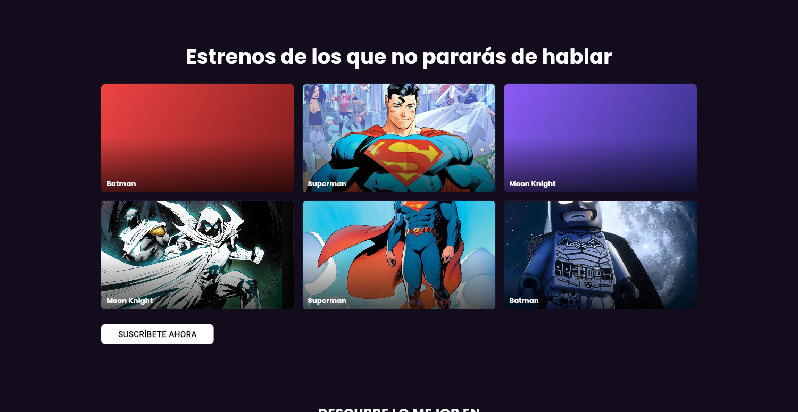
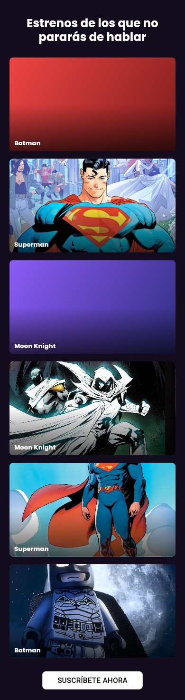
Un título, una navegación de pestañas tipo carrusel (la del centro grande y en blanco, las vecinas difuminadas, con flechas a los lados) y debajo la misma cuadrícula 3×2, que cambia su contenido al elegir otra pestaña. En móvil las pestañas se reducen y la cuadrícula pasa a una sola columna.
La pestaña seleccionada se maneja con estado local y rota la lista de tarjetas. Las flechas son botones de icono y las etiquetas cambian de tamaño y opacidad según estén seleccionadas o no. Se reutiliza la cuadrícula de la sección anterior. El patrón se tomó del scraping de la página.
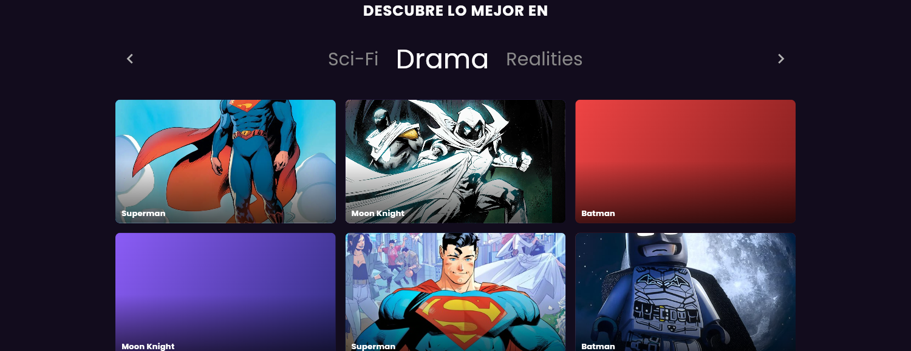
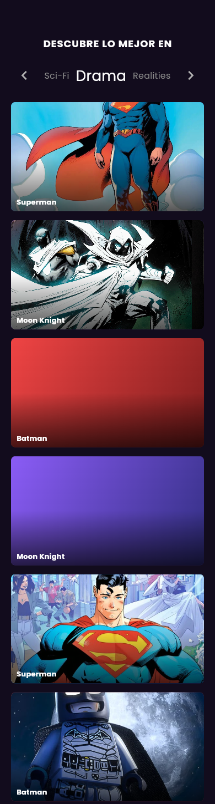
El logotipo, un acordeón de preguntas frecuentes que se expanden y colapsan y, al final, el pie de página con enlaces de navegación, enlaces legales, el aviso de copyright e iconos de redes sociales.
El acordeón usa un componente expansible nativo. Los enlaces del pie se reacomodan automáticamente según el ancho disponible. Los iconos provienen del set de Material. Todos los textos se obtuvieron del scraping de la página.
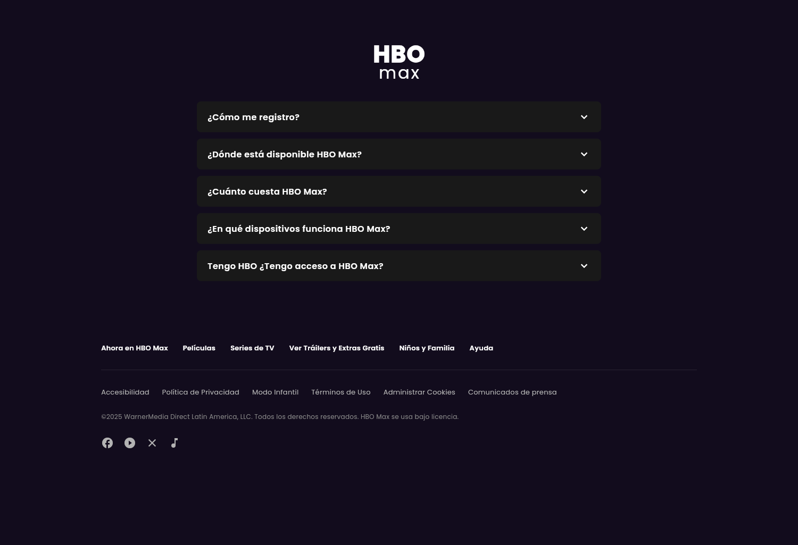
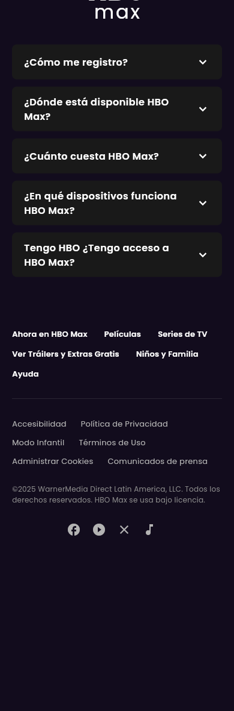